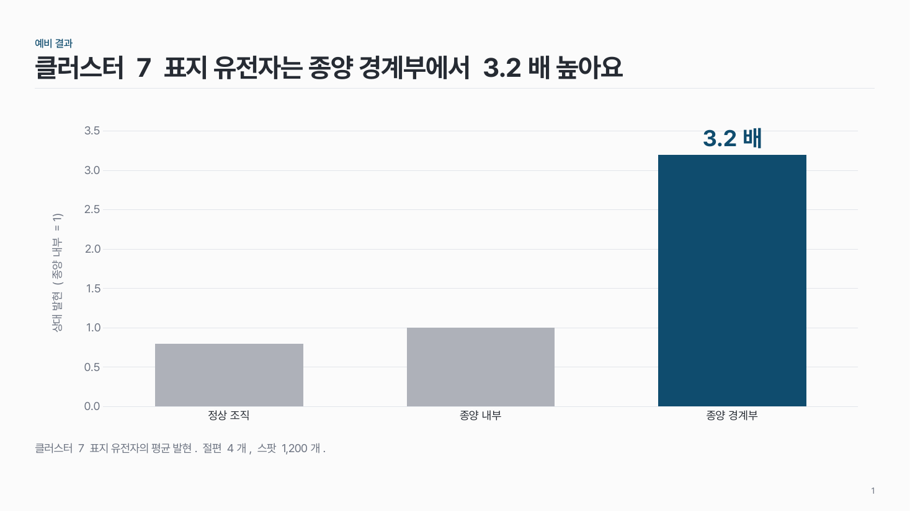
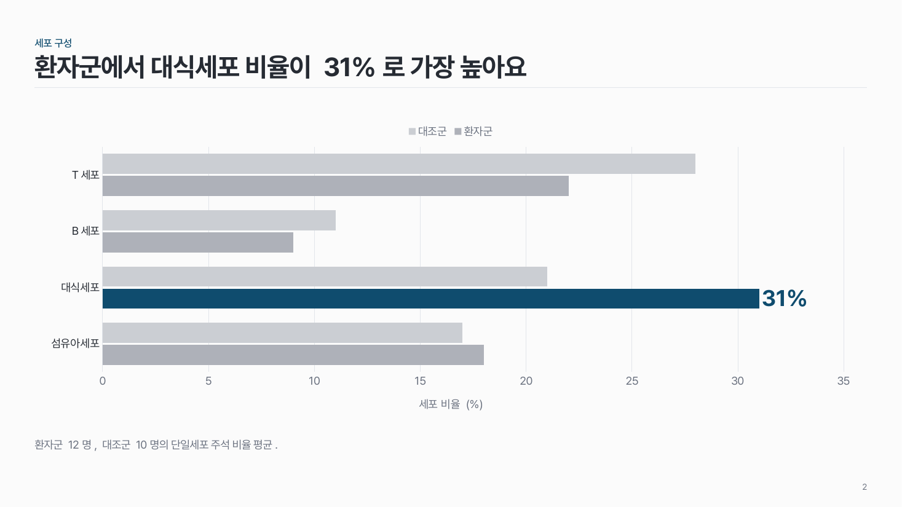
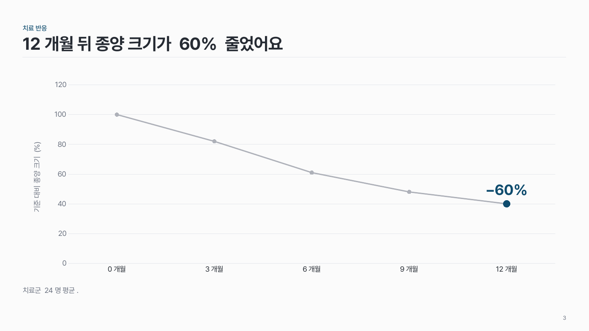

그래프 한 장 data-02
그래프 하나를 크게. 핵심 막대·점 하나만 주조색, 나머지는 회색, 핵심 수치는 그 옆에 크게.

이 시안
세로 막대 · 핵심 막대 + 수치 라벨 · 주석
슬라이드 제목: 클러스터 7 표지 유전자는 종양 경계부에서 3.2배 높아요
언제 쓰나
그래프 하나가 그 장 주장의 근거 전부일 때요. 읽어야 할 수치가 하나이고, 그 수치가 슬라이드의 결론이 되는 장에 맞아요.
구성
- 슬라이드 제목에 그래프가 말하는 결론을 한 문장으로.
- 가운데에 그래프 하나를 본문 높이의 60% 이상으로.
- 핵심 막대·점 하나만 주조색, 나머지는 회색 명도.
- 핵심 수치 라벨을 그 바로 옆에 (축 글자의 두 배 크기).
- 아래에 조건·표본 수 주석 두 줄 이내.
지킬 것
- 그래프 1개, 계열 3개 이내.
- 축·눈금 글자 12pt 이상, 격자선 0.5pt 옅은 회색.
- 차트 제목은 끄고, 범례는 그래프 바로 위나 옆에.
하지 말 것
- 기본 스타일 그대로의 차트를 붙이지 않아요.
- 강조 요소를 둘 이상 칠하지 않아요.
- 비교가 안 되는 꺾은선은 막대로, 원그래프는 두 개 이내로.
PowerPoint에서
예시 pptx의 그래프는 PowerPoint 차트라서 마우스 오른쪽 > 데이터 편집으로 숫자를 바꿀 수 있어요. 점 하나만 색을 바꾸려면 그 막대를 두 번 천천히 눌러 하나만 선택한 뒤 채우기를 바꿔요.
더 볼 게시물 Instagram @peedori_
시안 비교
같은 내용을 옵션만 바꿔 그렸어요. 그림을 누르면 크게 보여요.
A세로 막대 · 핵심 막대 + 수치 라벨 · 주석
슬라이드 제목: 클러스터 7 표지 유전자는 종양 경계부에서 3.2배 높아요

B가로 막대 · 계열 2개 · 범례 위
슬라이드 제목: 환자군에서 대식세포 비율이 31%로 가장 높아요

C꺾은선 · 마지막 점 강조
슬라이드 제목: 12개월 뒤 종양 크기가 60% 줄었어요